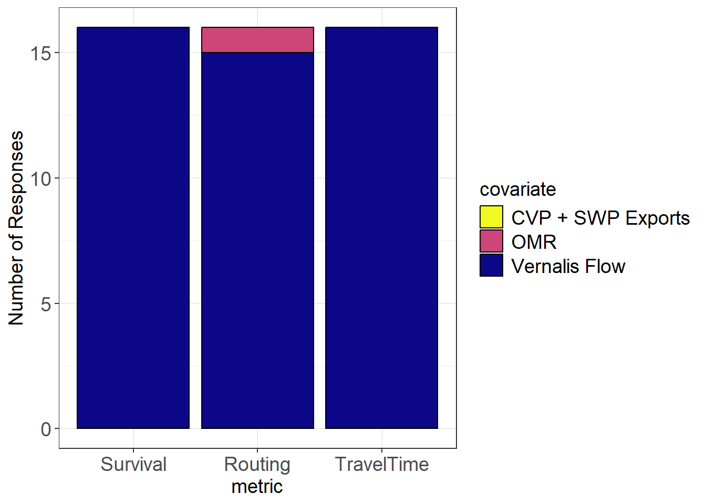
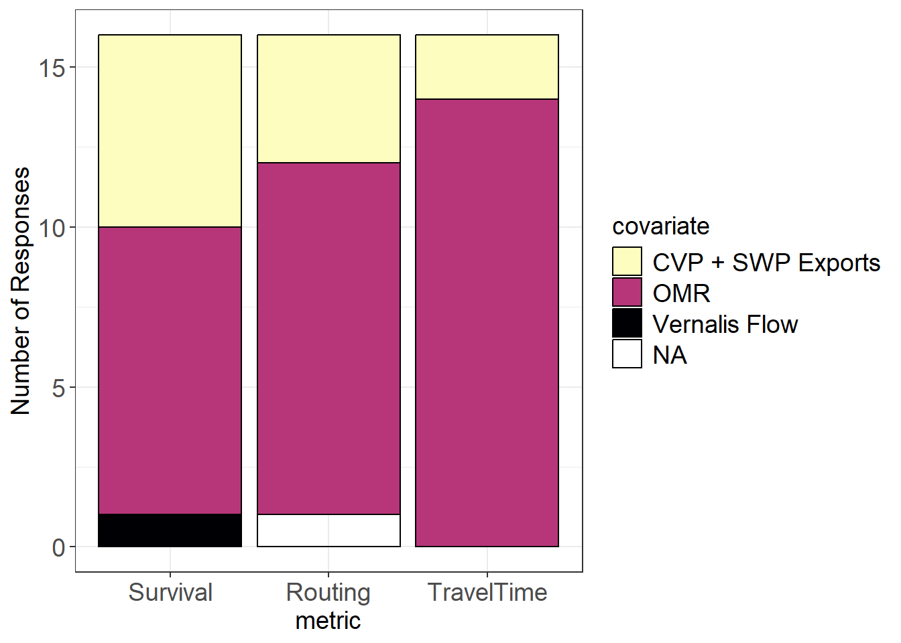

Steelhead-Elicitation
Steelhead Elicitation Results Round 1
Regions
Survival Covariates
- Reached 100% consensus on Region 1 survival
- Split for the remaining regions
| region | covariate | prop | med_conf |
|---|---|---|---|
| 1 | CVP + SWP Exports | 0.00 | NA |
| 1 | OMR | 0.00 | NA |
| 1 | Vernalis Flow | 1.00 | 3.0 |
| 2 | CVP + SWP Exports | 0.12 | 2.0 |
| 2 | OMR | 0.50 | 2.0 |
| 2 | Vernalis Flow | 0.38 | 2.0 |
| 3 | CVP + SWP Exports | 0.00 | NA |
| 3 | OMR | 0.56 | 2.0 |
| 3 | Vernalis Flow | 0.44 | 1.0 |
| 4 | CVP + SWP Exports | 0.38 | 1.5 |
| 4 | OMR | 0.56 | 2.0 |
| 4 | Vernalis Flow | 0.06 | 2.0 |
Rationale
Region 1
Vernalis Flow
OMR
CVP/SWP Exports
Region 2
Vernalis Flow
OMR
CVP/SWP Exports
Region 3
Vernalis Flow
OMR
CVP/SWP Exports
Region 4
Vernalis Flow
OMR
CVP/SWP Exports
References
Perry et al. 2018
Buchanan et al. 2021
Pope et al. 2025
Buchanan and Whitlock (2022): temperature was better supported than Delta inflow for FR Chinook; correlation between temperature and flow
Cavallo et al. 2015
Buchanan, R.A., Skalski, J.R. Relating survival of fall-run Chinook Salmon through the San Joaquin Delta to river flow.
Hydrodynamics minimally affected by exports and OMR (Cavallo et al. 2013, Cavallo, B., P. Gaskill and J. Melgo 2013, Cramer report
USFWS reports 2021, 2022, 2024; 2025)
South Delta steelhead survival studies (Matthias et al.) - 2011
Buchanan 2024
2024 CAMT Salmon Technical Working Group Final Report “a Review of Recent Science to Improve Our Understanding and Application of Life Cycle and Decision Support Models to Salmon Management in the South Delta”; Buchanan steelhead routing presentation June 2025; Buchanan et al. 2021; Pope et al. 2025; Buchanan and Whitlock 2022 Reclamation LTO FEIS Appendix I Old and Middle River Flow Management Attachment I.3 Delta Export Zone of Influence Analysis
Routing Covariates
- Reached consensus on Region 1 routing
| region | covariate | prop | med_conf |
|---|---|---|---|
| 1 | CVP + SWP Exports | 0.00 | NA |
| 1 | OMR | 0.06 | 2 |
| 1 | Vernalis Flow | 0.94 | 3 |
| 2 | CVP + SWP Exports | 0.31 | 2 |
| 2 | OMR | 0.50 | 2 |
| 2 | Vernalis Flow | 0.19 | 2 |
| 3 | CVP + SWP Exports | 0.00 | NA |
| 3 | OMR | 0.62 | 2 |
| 3 | Vernalis Flow | 0.38 | 1 |
| 4 | CVP + SWP Exports | 0.25 | 1 |
| 4 | OMR | 0.69 | 2 |
| 4 | Vernalis Flow | 0.00 | NA |
| 4 | NA | 0.06 | 1 |
Travel Time Covariates

- Reached consensus on Region 1 and Region 4 travel time
| region | covariate | prop | med_conf |
|---|---|---|---|
| 1 | CVP + SWP Exports | 0.00 | NA |
| 1 | OMR | 0.00 | NA |
| 1 | Vernalis Flow | 1.00 | 3.0 |
| 2 | CVP + SWP Exports | 0.31 | 2.0 |
| 2 | OMR | 0.62 | 2.0 |
| 2 | Vernalis Flow | 0.06 | 3.0 |
| 3 | CVP + SWP Exports | 0.06 | 1.0 |
| 3 | OMR | 0.44 | 2.0 |
| 3 | Vernalis Flow | 0.50 | 1.5 |
| 4 | CVP + SWP Exports | 0.12 | 1.5 |
| 4 | OMR | 0.88 | 2.0 |
| 4 | Vernalis Flow | 0.00 | NA |
Resources
- A Shiny app is available that would allow others in the group to see how exports, SJR inflows and OMR flows influence hydrodynamic conditions in each of these regions. Many participants may not be familiar with these data.
Topics to be discussed
- On what basis should we determine “primary covariate”?
- (Question about Pope et al 2025) NMFS would welcome some discussion about Region 2 and Region 4. Region 2 appears to overlap Region 4 from the export facilities north to HWY 4 – do survivals and travel times between those receivers contribute to relationships in both regions? Is there an assumed direction for transiting Region 4? Is it correct that fish that enter the mainstem San Joaquin River through the mouths of Middle or Old River (NOT via Turner Cut) do not contribute to transit success of Region 4?
- Comment: There is no current commitment or regulatory requirement for any barrier (rock or non-physical) at Head of Old River (HOR). So, NMFS assessed the explanatory value of the various covariates within the “barrier out” panels of figures. However, NMFS wonders if this ends up ignoring (a) much of the AT data which may have been conducted with the barrier in, and (b) much of the “more usual” Vernalis flows, i.e. <5,000 cfs which, under past regulatory regimes, would be associated with “barrier in”. What did other experts think about barrier status?
Caveats/Suggestions
- Likely more options need to be considered or within variable wet/normal/dry scenarios
- Tidal flow should be considered as the primary covariate for region 3.
- Might it be reasonable to make competing predictions using competing covariates in some reaches, if the model set was restrained to just a couple of alternatives? The user would then select which model to use (e.g., OMR-driven dynamics in Region 4 vs export-driven dynamics in Region 4).
- Covariates should be ranked primarily on their mechanistic basis and the strength of that physical effect in the region of interest. For example, if the expected effect of exports is altered hydrodynamics, exports should not be considered as a covariate in regions where exports do appreciably change hydrodynamic conditions experienced and perceived by fish. Should be an option to have none of these three environmental covariates in regions where none of a clear, strong mechanistic effect.
- All responses are within the context of “modern” operations post-2009 under the conditions observed in literature cited. I am uncertain of what the primary covariate would be if operations were significantly changed during juvenile salmonid outmigration period. There are many factors, if significantly modified may impact survival and routing– installation of barriers, habitat restoration improvements to facilities, significant increases or decreases of pumping rates, predator control measures, changes to trucking and release operations. For example, if water exports were always at maximum capacity or significantly more negative than -5,000 OMR Index, exports and OMR more likely to influence routing than under modern conditions. Exports and OMR could become increasingly more of important covariate on survival in those regions that are close in proximity to export facilities. I’m uncertain if it would be more of negative impact on survival or positive impact on survival. Under poor conditions, perhaps it would increase survival by through the salvage operations, fish would get a free ride to a better environment like we have seen in some chinook salmon studies. However, the salvage operations are most efficient at a specific rate–not too fast and not too slow.
- Probably more relevant for chinook: My hypothesis that the salvage operations route probably increases survival of fry-size chinook during wet years. We observe a lot of fry-size chinook in salvage during wet years. Most of salmonid observations for these routing and survival studies are based on smolt-sized fish that are large enough to be acoustically tagged.
Concerns
- I am concerned that the published paper is confining the expert elicitation. It seems that experts should be consulted prior to modeling to establish the proposed hypotheses and mechanisms. Both the model structure and predictor variables could be quite different with such an exercise. I think response variables may also be reduced. For example, would we mange for reduced travel time if it doesn’t help survival? What about routing?